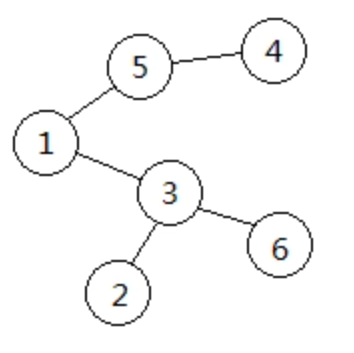
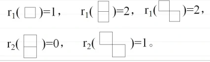
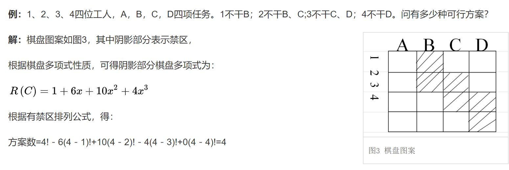
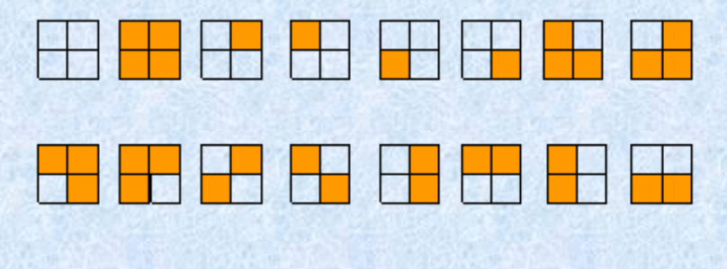
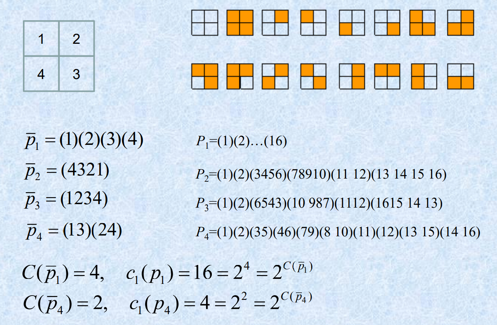

不是很感兴趣。
# 和积法则
# N 取 r 的可重组合数：
(n+r−1r)
-
因为可以把可重结果，例如1,1,1,2,2，分别对应位置+0,+1,+2,+3,+4，然后映射到1,2,3,5,6。
-
于是 n 取 r 可重就转换成了 n+r-1 取 r 不可重。于是得到了答案。+0,+1,...,+r−1，所以从1,...,n+r−1 中选r 个后，再−0,−1,−2,..,−r+1 就得到了一个答案。
-
注意这个问题转化是一一映射的，不能选择+1,+2,+3,+4,+5 是因为存在方案1,2,3,4,5，他无法转化回去。
[例]：把 r 个相同的球，放入 n 个不同的箱子里，方案数是多少？
解：就是 n 取 r 的可重组合数。可以从 n 中取可重的 r 个盒子，再把这 r 个球放到对应的盒子中。
# 杂题
含数字 6，能被 3 整除的 5 位整数有多少个？
- 手动数位 dp，记dp[i][j][0/1] 表示到第 i 位，模 3 余j，是否含 6。直接状态转移。
# 排列组合
# prufer 序列
一棵标号树和一个 prufer 序列是一一对应的。
- 树转化为 prufer 序列：
- 将叶子结点中，最小标号的一个删除，序列中加入它的父亲。
- 重复该过程直到树只剩下两个结点。
- prufer 序列转化为树：
- 构造一个集合\
- 找出集合中最小未在 prufer 序列中出现的数，将该数和 prufer 序列中第一个数连边
- 把该数和 prufer 序列中第一个数删除。
- 重复 n-2 次，把集合中剩余的两个点连边。
例：
它的 prufer 序列为{3,5,1,3}。由 prufer 序列构造树时，连边顺序为(2,3),(4,5),(1,5),(1,3),(3,6)。
# 杂题
从 1~300 中取 3 个不同的数，其和能被 3 整除，有多少种取法？
- 分组：
{1,4,7,...,298}{2,5,8,...,299}{3,6,9,...,300}
只能三个都取同一组，或 3=0+1+2 每个组各取一个。于是答案是3C1003+1003。
m 个人从 n 个入口进站，只考虑同一个入口进站人的先后顺序，不考虑不同入口进站的先后顺序。求进站顺序方案数。
x1+x2+...+xn=r，其中x1,x2,...,xn≥1，都是整数。求解的个数。
- 这种也是插板法，答案为Cr−1n−1。即把1,1,...,1（r 个 1）插n−1 个板，分成 n 份。
x1+x2+...+xn=r，其中x1,x2,...,xn≥0，都是整数。求解的个数。
- 转化成(x1+1)+(x2+1)+...+(xn+1)=r+n,(x1+1),...,(xn+1)≥1。答案就是Cn+r−1n−1。
n 个 0，n 个 1，组成一个 2n 位二进制数。要求从左到右扫描，使得 1 的个数总是不小于 0，求方案数。
-
其实就是 n 对括号合法匹配数。对于一个合法串，可以考虑其最后一个括号的匹配情况，即它一定满足形式：
P=A(B)
而A,B 都是合法的子串。所以 P 的方案数就是P(n)=∑i=0n−1P(i)P(n−1−i)。即 A 和 B 的子串长度可以是0..2(n−1)。
这其实是卡特兰数的递推数列，即最终方案为C2nn/(n+1)。
# 排列的生成
# 字典序
对于一个排列P1P2P3...Pn，求他下一个排列。
例：349687521，Pi+1...Pn=87521，Pi=6，Pk=7
所以下一个字典序为349712568。
康托编码：记ai 为Pi 右侧比Pi 小的数字个数。则排列P1P2P3...Pn 可一一映射为其字典序排名：
d=a1(n−1)!+a2(n−2)!+...+an−11!
注：d=0,1,...,n!−1
根据排列计算其字典序数是简单的。同样也可以求第 k 个排列。以n=5，求第95 个排列为例：
- 95/4!=3..........23（带余除法）
- 23/3!=3..........5
- 5/2!=2..........1
- 1/1!=1.........0
于是第一位为4（右边肯定有 3 个比他小），第二位为 5（右边有三个比他小，其中 4 在他左侧），第三位为 3（右边肯定有两个比他小），第四位为 2，第五位为 1。
所以第 95 个排列为 45321。（注意从 0 开始数）
# 序数法
将一个排列P1P2...Pn 一一映射到一个序列an−1an−2...a1。其中，ai 表示序列中，i+1 右侧比i+1 小的数的个数。
例如：349687521 对应的序数为64332221。显然，序列的范围是00...0 到(n−1)(n−2)...1，共n! 个。
-
求下一个排列：序数加一。序数的a1 是 2 进制，a2 是 3 进制，a3 是 4 进制，以此类推。
因此，序数64332221+1=64332300。
而序数转化为排列是简单的。从大到小依次找到数应该在的位置就好了。64332300 对应的排列就是419687523。
# 容斥原理
∣i=1⋃nAi∣=i=1∑n∣Ai∣−i<j∑∣Ai∩Aj∣+i<j<k∑∣Ai∩Aj∩Ak∣−....+(−1)n∣A1∩A2∩A3∩....∩An∣∣i=1⋂nAiˉ∣=∣U∣−∣i=1⋃nAi∣
# 错排
答案是：
n!−Cn1(n−1)!+Cn2(n−2)!−Cn3(n−3)!+...+(−1)kCnk(n−k)!+(−1)nCnn0!=n!−1!n!+2!n!−....+(−1)kk!n!+...+(−1)nn!n!=n!(1−1!1+2!1−...+(−1)nn!1)
# 欧拉公式
n=p1α1p2α2...pnαn。记[1,n] 中，pi 的倍数集合为Ai，则∣Ai∣=pin,∣Ai∩Aj∣=pipjn。于是比 n 小和 n 互质的数的个数就为∣⋂i=1nAiˉ∣。
# 杂题
m 个元素的集合，到 n 个集合满射的个数为nm−Cn1(n−1)m+Cn2(n−2)m−...+(−1)n−1Cnn−11m
# 鸽巢原理
# Ramsey 数
记r(p,q) 为参数是p,q 的 Ramsey 数。它的含义是，对任意n>r(p,q)，那么 n 个点的完全图，用两种颜色去边染色，要么存在p 个顶点构成的子图的边全是一种颜色，要么存在q 个顶点构成的子图的边全是另一种颜色。
即n≥r(p,q)，要么存在 p 个人相互认识，要么存在 q 个人相互不认识。
# 杂题
参加一个宴会的人中，至少存在两人，它们认识的宴会上的人数相同。
- 考虑 n 个人参加，如果他们认识的人两两不同，则他们认识的人数从小到大排就是0,1,2,...,n−1（共 n 个），那么显然认识最多的人要认识剩下的所有人，而认识最少的人却一个人都不认识，这矛盾。
1 到 2n 的正整数中，任取 n+1 个，则它们中必有一对数，其中一个是另一个的倍数。
- 考虑所有的正整数都能写成A∗2B 的形式，A 是奇数，B 是正整数。而很显然[1,2n] 中的奇数只有 n 个，故取 n+1 个数肯定会有两个数对应的 A 相同。则它们之间有倍数关系。
设a1,a2,...,am 是一个正整数序列，则存在1≤k≤l≤m，使得ak+ak+1+...+al 是 m 的倍数。
- 考虑前缀和模 m 的结果，记Sn=∑i=1naimodm。若存在 n，使得Sn=0 则直接得证。否则，Sn 都不为 0，则它们为1,2,...,m−1，又因为有 m 个前缀和，所以肯定有两个前缀和相同。将它们相减，就得到了一段连续的模 m 为 0 的子序列。
设a1,a2,...,an 是一组正整数序列，满足a1+a2+...+an≤r。求证∀m<2n−r，都存在一个子序列使得ah+ah+1+...+ak−1+ak=m。
- 考虑前缀和Sn，然后可以构造两组单调的正整数序列为S1,S2,...,Sn 和S1+m,S2+m,...,Sn+m，共 2n 个数。显然这 2n 个数都小于等于r+m。如果2n>r+m，则必定存在两个数相等。而且一个数在前一个序列，另一个数在后一个序列。则存在h,k 使得Sh−Sk=m。
n2+1 个不同实数组成的序列中，一定存在长为 n+1 的单调子序列。
-
记f[i] 为从第 i 位开始最长严格递增的子序列长度。若∀1≤i≤n2+1，都有f[i]≤n 的话，考虑抽屉原理，则至少有f[i1]=f[i2]=...=f[in]=f[in+1]。
于是可以考虑ai1,ai2,...,ain,ain+1。若它们单调减，则构成了一个长为n+1 的单调减序列。否则，若存在ai1<ai2，则f[i1]>f[i2]，矛盾。
六个点的完全图中，用红 / 黑给边染色，必然存在同色三角形。
- 考虑点 A 连的五条边，根据抽屉原理，至少有三条边是同色的，不妨设为AB,AC,AD。再考虑边BC,BD,CD，若它们中有一条是和AB,AC,AD 同色，则存在了同色三角形。否则，它们都是另一种颜色，则BCD 就是一个同色三角形。
# 生成函数
# 普通生成函数
求解多重递推可以这样，例如：
{an=9an−1+bn−1bn=9bn−1+an−1a1=8,b1=1
不妨设数列的生成函数分别是A(x),B(x)：
A(x)=a1+a2x+a3x2+...B(x)=b1+b2x+b3x2+...
然后可以凑出递推式：
an−9an−1−bn−1=0⎩⎪⎪⎨⎪⎪⎧A(x)=a1+a2x+a3x2+...−9xA(x)=−9a1x−9a2x2−...−xB(x)=−b1x−b2x2−...∴(1−9x)A(x)−xB(x)=a1+(a2−9a1−b1)x+(a3−9a2−b2)x2+....=a1+0+0+0+...=8
同理，由第二个递推式有(1−9x)B(x)−xA(x)=b1=1。所以可以解方程，得：
A(x)=(1−8x)(1−10x)−71x+8B(x)=(1−8x)(1−10x)−x+1
# 指数生成函数
例如错排问题：
Dn−nDn−1=(−1)nD0=1,D1=0,D2=1
可以设指数型生成函数：
G(x)=D0+D1x+2!D2x2+3!D3x3+...xG(x)=D0x+D1x2+2!D2x3+3!D3x4+...∴(1−x)G(x)=D0+i=1∑∞(i!Di−(i−1)!Di−1)∵n!Dn−(n−1)!Dn−1=n!(−1)n∴(1−x)G(x)=D0+i=1∑∞i!(−x)i=1−1!x+2!x2−...=e−x∴G(x)=1−xe−x=(1−1!x+2!x2−...)(1+x+x2+x3+...)∴n!Dn=1−1!1+2!1−....+n!(−1)n
其中，n!Dn 就是xn 前的系数。考虑多项式乘法。
# 整数拆分问题
将 n 拆成 1，2，4，5 的和，不允许重复。
- (1+x)(1+x2)(1+x4)(1+x5) 中，xn 前的系数
将 n 拆成 1，2，4，5 的和，允许重复。
- (1+x+x2+x3+...)(1+x2+x4+x6+...)(1+x4+x8+x12+...)(1+x5+x10+...)
# 棋盘多项式
棋盘是由若干格子组成的。格子间不一定相连，但每个格子都有两个属性：行和列。行和列都是整数。格子里可以放棋子。
记rk(C) 表示在棋盘 C 中放 k 个棋子的方案数，要求同一行、同一列至多一个棋子。
那么R(C)=∑i=1nri(C)xi 称为棋盘 C 的棋盘多项式。
例：
# 性质
- 对于一个棋盘 C，对于任意一个格子 x，记 C 去掉 x 这一格子后的剩余棋盘是Ce，记 C 去掉 x 所在行和列所有的格子后的剩余棋盘为Ci，则有：
rk(C)=rk−1(Ci)+rk(Ce)R(C)=xR(Ci)+R(Ce)
原理就是，要么格子 x 里有棋子，即rk−1Ci，要么格子 x 里没棋子，即rk(Ce)。
# 应用 —— 有禁区的方棋盘放棋子方案数
一个n×n 的方格棋盘，其中有一些禁区。则在其中放 n 个棋子（不许同一行同一列有多个棋子）的方案数为：
n!−r1(C)(n−1)!+r2(C)(n−2)!+...+(−1)nrn(C)
其中，rk(C) 表示在禁区棋盘放 k 个棋子的方案数。例：

证明：
设Ai 为第 i 行的那个棋子落入禁区的放置方案数。则答案是∣⋂i=1nAiˉ∣。
而∑i=1n∣Ai∣=r1(C)(n−1)!,∑i<j∣Ai∩Aj∣=r2(C)(n−2)!。于是由容斥原理可以得出。
# 应用 —— 错排
- n 的错排数为，n×n 的棋盘，禁区为对角线，求方案数。显然，禁区棋盘的多项式为R(C)=(1+x)n=1+Cn1x+...。
- 所以方案数为n!−Cn1(n−1)!+Cn2(n−2)!−...+(−1)nCnn。
# 莫比乌斯反演
F(n)=d∣n∑f(d)f(n)=d∣n∑μ(d)F(dn)μ(x)=⎩⎪⎪⎨⎪⎪⎧1(−1)n0x=1x=p1⋅p2⋅p3⋅....⋅pnelse
其中，p1,p2,...,pn 是互不相同的素数。
莫比乌斯反演的证明就是：
d∣n∑μ(d)={10n=1elsed∣n∑μ(d)F(dn)=d∣n∑d1∣dn∑μ(d)f(d1)=d1∣n∑f(d1)d∣d1n∑μ(d)=f(n)
# Burnside 定理和 Polya 定理
# Burnside 定理
考虑计数问题。用两种颜色去染2×2 的棋盘，旋转相同算一种。求方案数。
首先，要画出左右可能的染色方案，即24=16 种。如下图：

按行优先，我们把这些方案数记为 1，2，…，16。然后我们需要去重。
- 旋转0°，则考虑这些染色方案间的等价置换关系。置换为p=(1)(2)(3)...(16)。意思是，第 i 个方案在旋转 0° 后就是第 i 个方案。
- 逆时针旋转 90°，则置换为p=(1)(2)(3456)(78910)(1112)(13141516)。意思是，第 1 个方案逆时针转 90° 后还是第 1 个，第 3 个方案逆时针 90° 后是第 4 个方案…
- 顺时针旋转 90°，则置换为p=(1)(2)(6543)(10987)(1112)(16151413)
- 旋转 180°，置换为p=(1)(2)(35)(46)(79)(810)(11)(12)(1315)(1416)。
然后去重方案数就是每个置换中长度为 1 的置换数的平均。即：
416+2+2+4=6
最后答案是 6 种。
# Polya 定理
显然 Burnside 定理要画出所有的方案数，这不太好。考虑 polya 定理。同样一个问题，对棋盘入手：

然后显然，棋盘有 4 个元素。
-
旋转 0°，棋盘元素的置换为p=(1)(2)(3)(4)
-
逆时针旋转 90°，棋盘元素的置换为p=(4321)。4 号到 3 号位置上，3 号到 2 号位置上…
-
顺时针旋转 90°，棋盘元素的置换为p=(1234)。
-
旋转 180°，棋盘元素的置换为p=(13)(24)。
然后统计的方案数就是424+21+21+22=6，即考虑 “染色数 ^ 置换节数” 的平均值。（置换由几个小置换乘积而成）
# 有重复元素的圆排列
从 1，2，3，4 种，取 4 个数出来（可以重复）。将取出来的数排成一个圆排列（旋转相同算一种），则方案数有多少？
-
首先定义一个圆排列的周期。考虑一个圆排列：(1 2 1 2)，它的周期是 2（想象成一个圆）。
圆排列 (1 2 3 1) 的周期为 4，(1 1 1 1) 的周期为 1。
即周期就是最小循环节长度。
-
然后要求的答案就是∑d∣nM(d)，其中M(d) 表示周期为 d 的圆排列方案数。
显然有∑d∣nM(d)×d=mn，所有的方案数就是每个周期为 d 的方案数再乘上它的周期。
莫比乌斯反演，有：
nM(n)=d∣n∑mdμ(dn)=d∣n∑μ(d)mdn∴M(d)=d1d1∣d∑μ(d1)md1d
所以最后的答案就是：
M(1)=4μ(1)=4M(2)=21(μ(1)42+μ(2)41)=6M(4)=41(μ(1)44+μ(2)42+μ(4)41)=60∴ans=4+6+60=70
# 卡特兰数
Cn=n+1C2nnCn=i=0∑n−1CiCn−i−1
应用：
- n 边凸多边形，划分成若干三角形的方案数。
- 以 1，2，…，n 的顺序入栈，不同出栈结果的方案数。
- n 对括号合法匹配串数。
- n 个结点的二叉树的不同形态数。